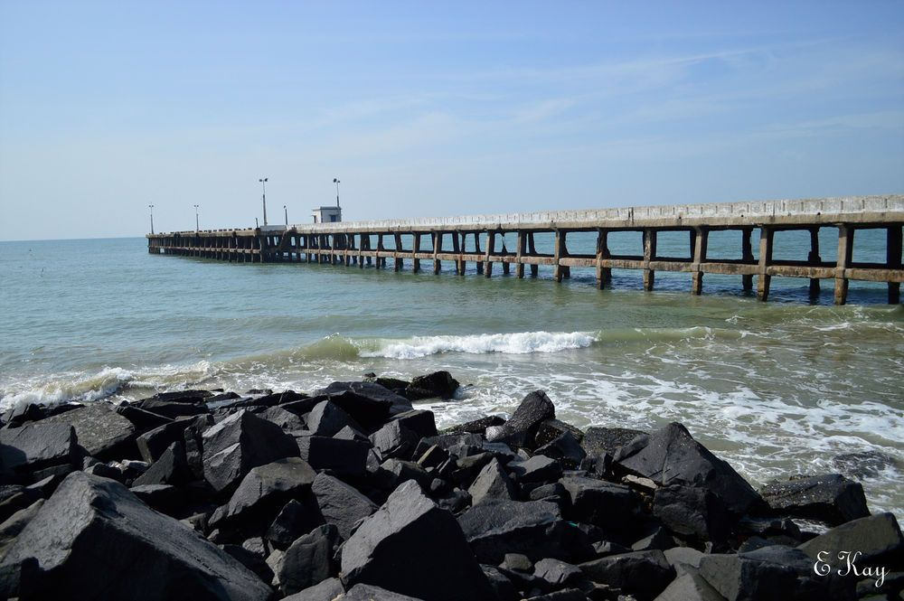
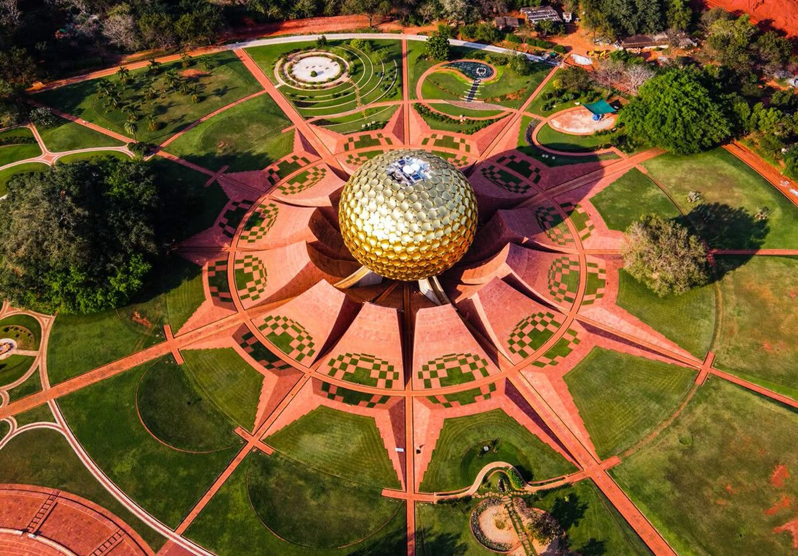
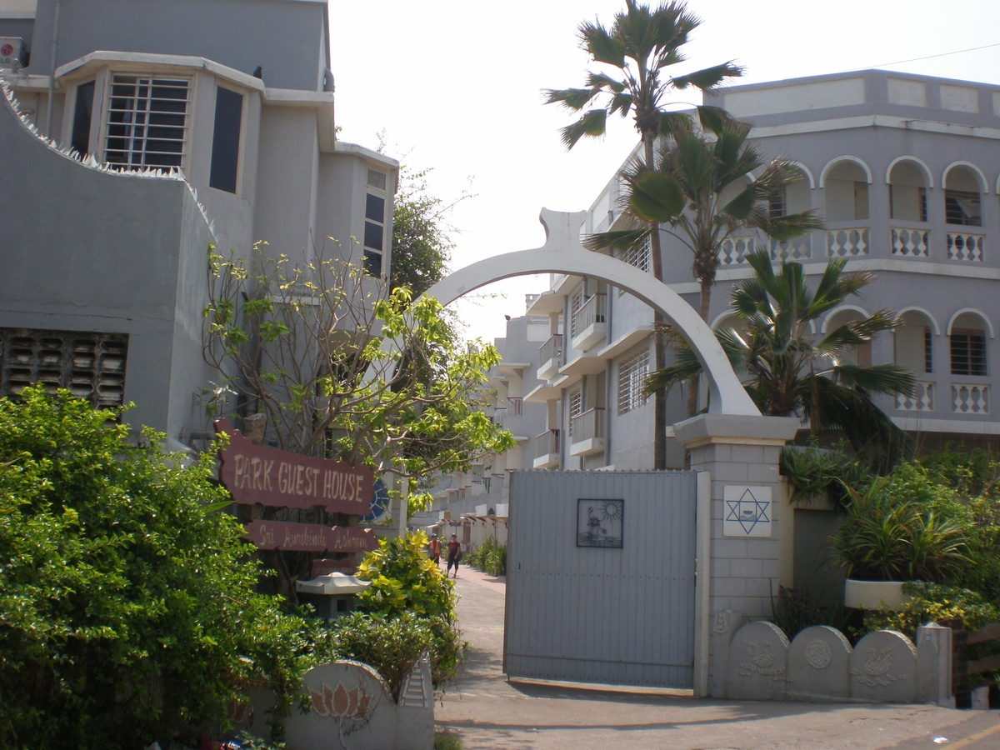

Where French charm meets Indian soul
Puducherry is a coastal town that blends colonial French elegance with traditional South Indian culture. Cobblestone streets, pastel villas, serene beaches, and soulful cafés define its charm. Life here moves slowly—perfect for travelers seeking peace, culture, and timeless beauty.



A spiritual retreat in the heart of Puducherry, offering a calm atmosphere for meditation, reflection, and inner peace.
EXPLOREOctober to March
Pleasant climate, ideal for sightseeing and beach walks.